此模式让你使用贝塞尔曲线连接现有几何体的各个部分。
菜单路径：模式 -> 桥接模式。
动作类别：绘制。
默认按键：Ctrl-B。
附加动作：提高细分级别、降低细分级别。拖动控制柄时按住 Shift 可关闭网格吸附。
| 用法：选择两条线段或两组线段： | 然后使用键盘快捷键或工具按钮（）激活桥接模式： | 进行一些修改，然后按 OK 按钮或 Enter 接受，或按 Cancel/Esc 取消： |
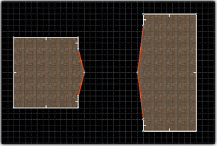 |
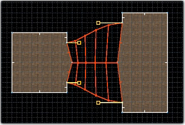 |
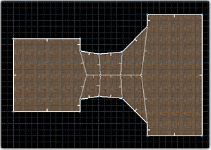 |
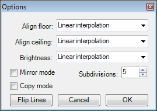 |
Align floor 和 Align ceiling 下拉菜单让你选择所创建扇区的高度如何插值。 亮度下拉菜单让你选择所创建扇区的亮度如何插值。 细分级别控制桥接有多少个细分。你也可以使用"Increase Subdivisions"（提高细分）和"Decrease Subdivisions"（降低细分）动作，通过键盘快捷键来控制它。 激活镜像模式可镜像成对控制柄的移动： 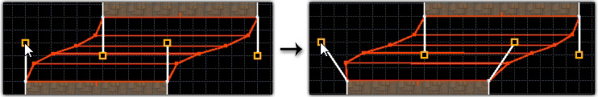 激活复制模式可复制成对控制柄的移动： 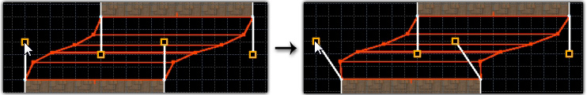 如果形状与自身交叉，你可以按下 "Flip Lines"（翻转线段）按钮来修正： 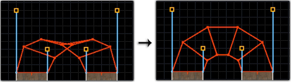 |
| 最高天花板 | |
| 最低地板 | |
| 线性插值 | |
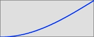 |
EaseInSine 插值 - 使用正弦（sin(t)）缓入对高度进行插值。 |
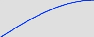 |
EaseOutSine 插值 - 使用正弦（sin(t)）缓出对高度进行插值。 |
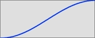 |
EaseInOutSine 插值 - 使用正弦（sin(t)）缓入/缓出对高度进行插值。 |
| 2D 视图： | 3D 视图： |
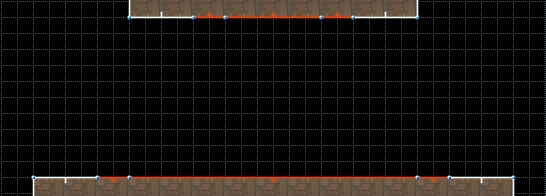 |
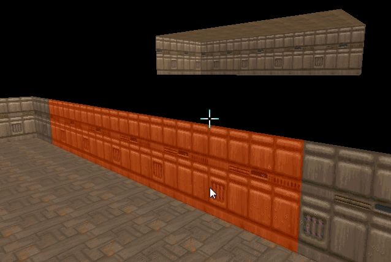 |
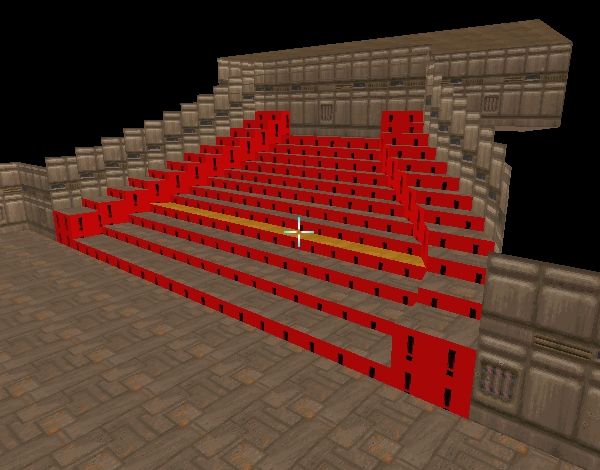
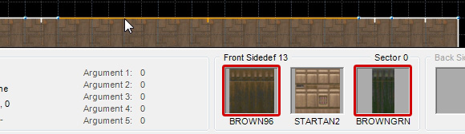
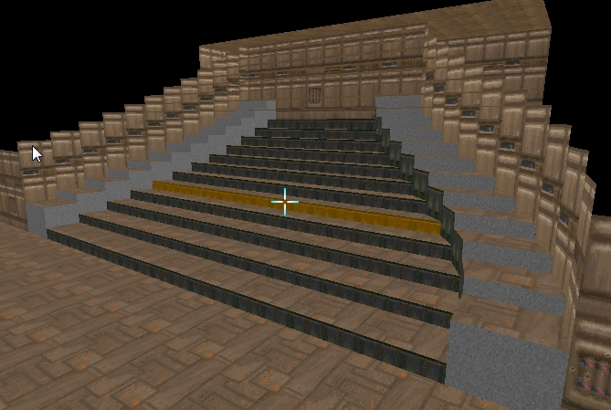